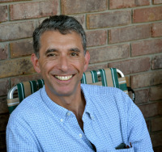
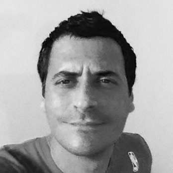
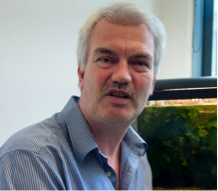
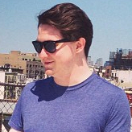
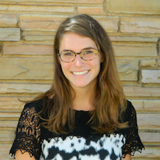
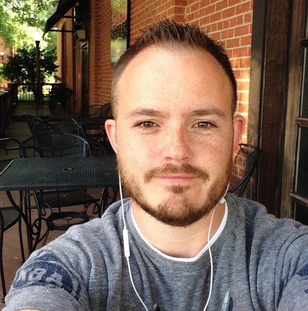

| Credits | ||
| Authors | Development | Thanks |
|  | ZEV TRACHTENBERG is an Associate Professor of Philosophy at the University of Oklahoma. He focuses on social and political philosophy, and approaches environmental issues from that point of view. His work on the Anthropocene grew out of a longstanding curiosity about the ways human beings interact with and transform the landscape. A summary of his research and teaching interests can be found at his departmental webpage. |
|  | ANTONIO J. CASTRO is broadly interested in conservation biology, particularly in the links between the conservation of nature and the maintenance of human wellbeing. His research focuses on the characterization of social-ecological systems, and the multidimensional evaluation of ecosystem services. He is particularly interested in exploring trade-offs between the biophysical supply and the social demand of ecosystem services, and providing information needed for decision-making. |
|
KIZA GATES is an ecologist and Postdoctoral Research Associate at the Oklahoma Biological Survey, University of Oklahoma. Her research explores how aquatic organisms respond to human induced stressors and how this response influences ecosystem function. |
|
ASA RANDALL is an archaeologist and Assistant Professor in the Department of Anthropology at the University of Oklahoma. His research, which focuses on ancient hunter-gatherers, considers the role of landscape alteration in the creation of social histories and identities. |
|  | INGO SCHLUPP is a Professor of Biology at the University of Oklahoma. He is interested in Animal Behavior, Ecology, and Evolution. He is mainly working on the evolution and maintenance of sex and speciation. You can get an overview of the many projects in his lab on his website: http://www.ou.edu/schlupp/. |
|
LYNN SOREGHAN is a geologist and Professor of Geology in the School of Geology and Geophysics at the University of Oklahoma. Her research focuses primarily on reconstructing aspects of Earth's climate, especially from "deep-time" (primarily Paleozoic) intervals. |
|
NOAH THERIAULT Is a sociocultural anthropologist and an Assistant Professor in OU's Department of International & Area Studies, where he teaches courses on political ecology, environmental (in)justice, and Southeast Asia. His current research explores the cultural politics of environmental regulation and indigeneity in the Philippines. More info here: http://ntheriault.wordpress.com/. |
| K. MEGHAN WIETERS teaches courses in environmental planning, subdivision planning, history and theory, and planning related issues with public health and active living. She was a practicing planner in Austin, Texas for 10 years working in transit planning, neighborhood planning and non-motorized mode planning. | |
The graphs in this site are produced using Cytoscape.js, an open-source graph theory library written in JavaScript. James Adams was the lead developer, and was primarily responsible for the functionality of this site.
|  | JAMES ADAMS is a Data and Visualization Librarian at Dartmouth College. His role includes the exploration of new software and hardware for purposes of research and instruction, and he is interested in the use of data visualization for scholarship in both the sciences and humanities. He earned his Master's Degree in Library and Information Science at the Pratt Institute in 2013 and holds a Bachelor's Degree in Music and English from Boston College. |
| ZEV TRACHTENBERG conceived the basic design of this site, and assisted James with the coding of the initial version--learning enough from him along the way to be able to hack some revisions for version 2.0. | |
|  | MOLLY OBERSTEIN-ALLEN is a fifth year student double majoring in Letters and Philosophy, with minors in Computer Science and Hebrew. In her free time, she enjoys cooking, writing, and running. |
|  | JOHN STEWART is the Assistant Director for the Office of Digital Learning at the University of Oklahoma. He earned his Ph.D. in history of science from the Univeristy of Oklahoma in 2013. |
We extend our special thanks to colleagues at OU whose advice along the way was invaluable:
NOTE: Institutional affiliations are listed for identification purposes only. All views expressed in this site are the authors' own, and are not intended to represent policies of the University of Oklahoma.